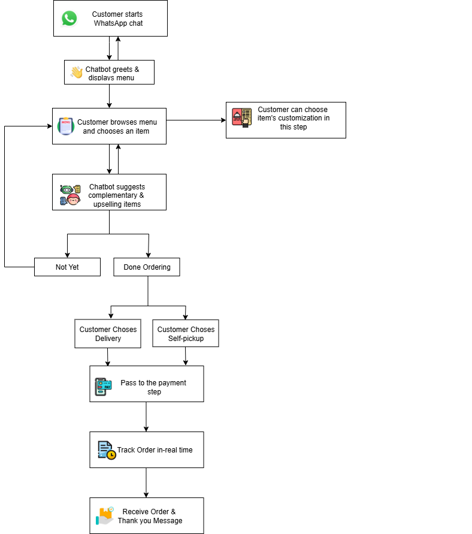

واتساب الذكي
نظرة عامة
واتساب الذكي (Smart WhatsApp) هو حل للطلب عبر المحادثة يتكامل مباشرة مع واتساب، ويتيح للعملاء التفاعل مع المطعم أو العلامة التجارية من خلال واجهة محادثة بسيطة. بدلًا من تصفح قائمة ويب أو تنزيل تطبيق، يمكن للعملاء تقديم طلباتهم والحصول على الدعم وتتبع التحديثات عبر المنصة نفسها التي يستخدمونها يوميًا.
يعمل الحل على أتمتة تصفح القائمة وتقديم الطلب واختيار التوصيل أو الاستلام ومعالجة الدفع وتحديثات الحالة في الوقت الفعلي. ومن خلال الاتصال السلس بنظام نقطة البيع (POS) وأنظمة المكتب الخلفي، يضمن واتساب الذكي الدقة والسرعة والراحة مع الإبقاء على تجربة محادثة طبيعية بالكامل للعملاء.
وإلى جانب الطلب، يتيح واتساب الذكي أيضًا البيع الإضافي المخصص وأتمتة دعم العملاء والتعامل الآمن مع المدفوعات وبيانات العملاء. وهذا يجعله أداة تجارة محادثية متكاملة تناسب العادات اليومية للعملاء.
مسار المحادثة
يرشد روبوت واتساب الذكي العملاء عبر مسار محادثة منظم يعكس عملية الطلب بصيغة محادثة طبيعية. وتشمل الخطوات ما يلي:
- الترحيب: يرحب الروبوت بالعميل ويعرض فئات القائمة المتاحة.
- اختيار المنتج: يتصفح العملاء أصناف القائمة ويختارون التخصيصات ويؤكدون الكمية.
- البيع الإضافي: يقترح الروبوت منتجات مكملة أو عروضًا ترويجية.
- التوصيل أو الاستلام: يطلب الروبوت موقع العميل (للتوصيل) أو يعرض خيارات الفروع (للاستلام).
- الدفع: يُنشئ الروبوت رابط دفع آمنًا أو يؤكد خيارات الدفع عند الاستلام.
- تتبع الطلب: يتلقى العملاء إشعارات مثل «Order confirmed» و«In preparation» و«Out for delivery».
يقلل هذا الهيكل المحادثي الجهد على العميل ويجعل تجربة الطلب أسرع وأكثر سهولة مقارنة بالأساليب التقليدية.
